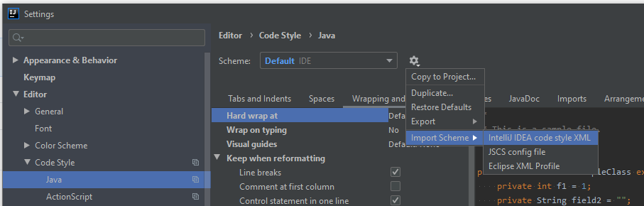
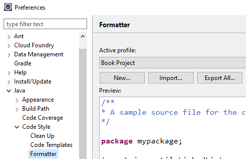

Java Style guide
By contributing to this repository, you are expected to follow this style guide. Please also ensure that you remain familiar with this document as it may change from time to time.
Table of Contents
- Introduction
- IDE formatting
- IntelliJ
- Eclipse
- Checking for violations
- Source files
- American English
- Source file structure
- Fields at the top
- Overloads together
- Newline at end of file
- Formatting
- Braces
- 100 character column limit
- One statement per line
- Empty blocks can be concise
- Whitespace
- Optional grouping parentheses: recommended
- Enum classes
- Annotations
- Comments
- Modifiers
- Numeric literals
- Variable declarations
- Arrays
- Indentation
- Naming
- Javadoc
- No @author tag
- Programming practices
- Annotations
- Don't swallow exceptions
- StringBuilder over StringBuffer
- Overriding hashCode() and equals()
- Overriding toString()
- Short methods
- TODOs
- Prefer Optional over null
- Favor EnumMap over HashMap
- JUnit tests
- Given/when/then pattern
- Fewest number of assertions in every test
- Assert all for multiple assertions
- Disabling failing tests
- Using DisplayName
- Avoid randomness
- Recommended reading
- Updates to this document
- Acknowledgements
Introduction
Good judgement should be followed. There may be times where it is more readable to not follow a particular guideline. Readable code is preferred over code that strictly follows this guide.
A short summary explaining why the guideline is in place is included to help explain the rationale behind having it.
IDE formatting
IDE-specific code style files have been exported and can be imported into your IDE. The files are located in the ide directory.
IntelliJ

For IntelliJ, you can use import the code style file. Go to File > Settings > Editor > Code Style > Java in Linux or Windows. Click on the settings cog and choose Import Scheme > IntelliJ IDEA code style XML.
Eclipse

If you use Eclipse, you can import the formatter file by going to Window > Preferences > Java > Code Style > Formatter and selecting the import button to import the Eclipse code style file.
Checking for violations
We're currently using Checkstyle to check for style guide violations. To o check for any violations, you can run the following command in the root directory of the project:
$ ./mvnw validate
By using the maven wrapper, you don't need to have Maven installed. Alternatively, you could run mvn validate if you do have Maven installed.
Source files
Use American English
All code and comments should be written in English (United States).
Source file structure
A source file should contain the following in order:
- License notice and copyright information
- Package statement
- Import statements
- Exactly one top-level class
There should be exactly one blank line to separate every section.
No wildcard imports
Wildcard imports, regardless of whether they are static, should not be used:
// good
import com.vaadin.flow.component.Component;
import com.vaadin.flow.component.ComponentEventListener;
// bad
import com.vaadin.flow.component.*;
No line-wrapping for package and import statements
The package statement and import statements should not be line-wrapped.
Fields at the top
All fields should appear at the top of the class before any constructors. Fields should not be interspersed between methods.
Overloads together
Overloaded methods, including constructors, should appear together with nothing in between.
Newline at end of file
Every source file should have one newline at the end of the file.
Formatting
Braces
One true brace style (1TBS)
We use the One true brace style (1TBS).
// bad: braces should be used even where it is optional to do so in if, else if, while and do statements
if (condition)
doSomething();
// good
if (condition) {
doSomething();
} else {
doSomethingElse();
}
100 character column limit
A line should generally not exceed 100 characters.
Exceptions to this rule:
- package and import statements
- Long URL in Javadoc
One statement per line
A line break should follow every statement. This includes variable declarations.
Empty blocks can be concise
Empty blocks can be concise providing they do not form a part of a multi-block statement.
// fine
void foo() {}
// also fine
void bar() {
}
// not fine
if (condition) {
foo();
} else { }
This applies to if/else and try/catch/finally blocks.
Whitespace
Vertical whitespace
Where there should be one blank line
-
Between the end of one method (the closing brace) and the start of another
-
Between groups of logical statements. This could be a group of related imports, fields, or statements within a method.
Generally speaking, there should not be more than one blank line.
Where there should not be one blank line
- Between the class name and the first field declaration (or method declaration or definition)
No horizontal alignment
// acceptable
private int numberOfPages;
private String authorFirstName;
// unacceptable
private int numberOfPages;
private String authorFirstName;
There should be no horizontal alignment. While it looks nice and improves readability, it can be harder to maintain.
Optional grouping parentheses: recommended
Optional grouping parentheses are recommended as they can improve readability. It can help when not everyone is clear with certain precedence rules.
Enum classes
If an enum class has no methods, it can be written as an array initialiser:
private enum EventType { SAVED, DELETED }
Comment fall-through
If a case continues onto the next statement group with a break, this should be commented. Something like // fall through is sufficient. For example:
switch (param) {
case 1:
case 2:
foo();
// fall through
case 3:
bar();
break;
default:
baz();
}
The final statement in the switch block, the default case above, does not require a fall-through comment.
Enumerate all cases or have a default case
Either cover all of the cases or use the default case. Covering all cases is the preferred approach.
Annotations
Annotations should appear after any javadoc for the class, field or method.
Each annotation should appear on its own line. For example:
@Override
@Nullable
public Integer getPagesReadIfPresent() {
...
}
However, for fields, multiple annotations can be on the same line:
@NotNull @VisibleForTesting String authorFirstName;
Comments
This section is to do with implementation comments, not Javadoc.
Comments should not be decorated with asterisks or any other characters.
Do you need the comment?
Only add comments where they add value. Comments should be used as a last resort. We prefer to make code readable by making the code trivial such that having a comment is redundant. Alternatively, we prefer to extract code into a method with a descriptive method name such that the method name makes the comment redundant.
Modifiers
Where applicable, class and member modifiers should appear in the following order, as recommended by the Java Language Specification:
public protected private abstract default static final transient volatile synchronized native strictfp
Numeric literals
Underscores in numeric literals
For numeric literals that are ten thousand or higher, underscores are recommended to separate digits by thousands:
// bad
int booksSold = 10000;
// good
int booksSold = 10_000;
Long suffixes
long variables should be suffixed with an uppercase L. The lowercase l should not be used as it may cause confusion with the digit 1. For example, 1_000_000_000L instead of 1_000_000_000l.
Variable declarations
One variable declaration per line
A variable declaration should appear on its own line. There should not be multiple declarations on one line:
// good
private String authorFirstName;
private String authorLastName;
// bad
private String authorFirstName, authorLastName;
Declare as close as possible to use
Local variables should be declared as close as reasonably possible to where it is used. This can help limit the scope and improve readability. Local variables should not be declared at the top of a method for the sake of it.
Arrays
No C-style array declarations
The square brackets should be next to the type name, not the variable name. This is because they a part of the type.
// good
String[] args
// bad
String args[]
Indentation
4 Spaces, no tabs
Four spaces should be used for indentation. This is clearer than two spaces (more than four is extraneous).
This also applies to CSS.
Aligning method calls
An exception to the above four spaces indentation rule is aligning method calls (see below). This can improve readability.
// good
bookGrid.addColumn(AUTHOR_KEY)
.setSortable(true);
// bad
bookGrid.addColumn(AUTHOR_KEY)
.setSortable(true);
Naming
Special prefixes or suffixes, such as to represent member variables, are not used. For example, the following are not permitted: mTitle and _title.
Package names
Package names are written in lowercase. Consecutive words are concatenated together without any underscores. For example, com.example.readinggoal, not com.example.readingGoal or com.example.reading_goal.
To aid readability, try to keep package names short and one-word names wherever possible.
Class names
Class names are written in PascalCase (also referred to as UpperCamelCase).
Class names should be nouns or noun phrases.
Interface names can be nouns or noun phrases. However, in some cases, adjectives or adjective phrases are better (e.g. Iterable).
Test classes should be the name of the class that it is testing followed by the suffix Test. For example. the test class for the GenreStatistics class should be called GenreStatisticsTest.
Method names
Method names are written in lowerCamelCase.
Method names should usually be verb or verb phrases. For example, processTransaction or findId.
Underscores are allowed in JUnit test methods to separate logical components. One popular pattern is <methodUnderTest>_<state>; for example, pop_emptyStack. The most important thing is that the test method name clearly summarises what is being tested.
Constant names
Constants are written in CONSTANT_CASE. It is written in uppercase letters with each word separated by an underscore.
Non-constant field names
Non-constant field names, regardless of whether they are static, are written inlowerCamelCase.
The names tend to be noun or noun phrases.
Parameter names
Parameter names are written in lowerCamelCase.
Single letter parameter names should be avoided in methods (common exception: for loops).
Local variables names
Local variables names are written in lowerCamelCase.
Even if they are immutable (e.g. marked as final), they are not considered constants, so they are not styled as constants.
Type variables names
Type variables should be either:
- One capital letter, which can be optionally succeeded by a letter (e.g. T, E or T2)
- A class name followed by the capital letter T (e.g. AuthorT)
Javadoc
No @author tag
Author tags can quickly become outdated as methods are updated or completely written by new authors. Git is far better at tracking changes.
Programming practices
Annotations
Use @Override
The @Override annotation should be used for overridden methods. This is so that the compiler can run a check at compile-time to see whether the method annotated with @Override actually overrides a method.
Use @VisibleForTesting
While it is usually better to limit members and methods, if it's required for testing, it will need to be made package-private. In such cases, they should be tagged as @VisibleForTesting to make it clear.
Don't swallow exceptions
Rarely should there be no response to a caught exception (e.g. you may want to log it).
If it is right not to do anything, then this has to be justified in a comment.
An exception to ignore exceptions is if the exception is expected in a test. For example, you may want to test whether the code under test does indeed throw an exception:
try {
foo(-1);
} catch (IndexOutOfBoundsException expected) {
}
In such cases, the exception parameter should be called or include the word expected, as above.
StringBuilder over StringBuffer
StringBuilder should be used instead of a StringBuffer for single-threaded code.
Overriding hashCode() and equals()
If you override hashCode(), it is good practice to also override equals().
The overrides of equals() and hashCode() should be equivalent; if x.equals(y) is true, then x.hashCode() should have
the same value as y.hashCode().
Overriding toString()
It is sometimes worthwhile overriding toString() for logging purposes.
// OK, but could be better. The hardcoded class name has to be changed if the class name changes
@Override
public String toString() {
return "Book[title= " + title
+ ", published = " + published
+ "]" ;
}
// Better
@Override
public String toString() {
return getClass.getName()
+ "[title= " + title
+ ", published = " + published
+ "]" ;
}
Short methods
Wherever possible, try to keep methods short (under 15 lines). This makes it easier to test, comprehend and reuse.
TODOs
TODO comments are acceptable and encouraged if they are useful. However, we ask that if you create a TODO, please also create a new corresponding issue.
Prefer Optional over null
Optional provides useful semantics that something may be null. If you need to use nulls, consider using Optionals instead.
Favor EnumMap over HashMap
For enums, favor EnumMap over HashMap for performance reasons.
JUnit tests
Use AssertJ
For assertions and assumptions, we're using AssertJ. We find this to be more readable (it flows nicer as it reads like a sentence) and it's easier to have a consistent team style.
Given/when/then pattern
The pattern we follow for JUnit tests are given/when/then. For example, given some input some setup, when an action occurs, then assert as desired. Concrete example:
@Test
void errorShownWhenEmailInUse() {
// given
userRepository.save(VALID_TEST_USER);
EmailField emailField = _get(EmailField.class, spec -> spec.withId("email"));
// when
_setValue(emailField, VALID_TEST_USER.getEmail());
// then
assertThat(emailField.getErrorMessage()).isNotBlank();
}
In general, we add comments to separate out the given, when and then sections. We find that this greatly improves readability.
Fewest number of assertions in every test
In every test method, try to minimise the number of assertions. Ideally, there should only be one.
Assert all for multiple assertions
If a test method needs multiple assertions, assertSoftly() should be used. Otherwise, lazy evaluation is used. For example, if you had two assertions, and both assertions fail, you will not know about the second assertion failing until you have fixed the first assertion.
No disabling failing tests
If a test fails, you are generally expected to fix it. We generally prefer for builds to fail rather than commenting out or disabling tests wtih the @Disable annotation.
Using DisplayName
All test classes should be annotated with a @DisplayName. For example, the test class TagServiceTest should
be annotated with the display name TagService should. We find this greatly improves readability as the method
names can be read like a sentence (e.g. TagService should findAllTags() or deleteExistingTag()).
A @DisplayName annotation should be used at a method level where it adds value. For example, you could replace a Javadoc comment with a display name. This is also useful if the method name is concise but not comprehensive. Adding a display name should be used where it serves as useful documentation.
Avoid randomness
While it may seem better to use pseudorandom bounded values so that you can test more cases, it rarely improves coverage. It's better to use fixed input data with well-defined edge cases.
Recommended reading
- Clean code, Robert C. Martin
Updates to this document
If you change any of the recommended styles in this guide, please note that the following may also need to be changed:
In addition, please update the table of contents.
Acknowledgements
This style guide has been adapted from Google's Java style guide and Twitter's common style guide.